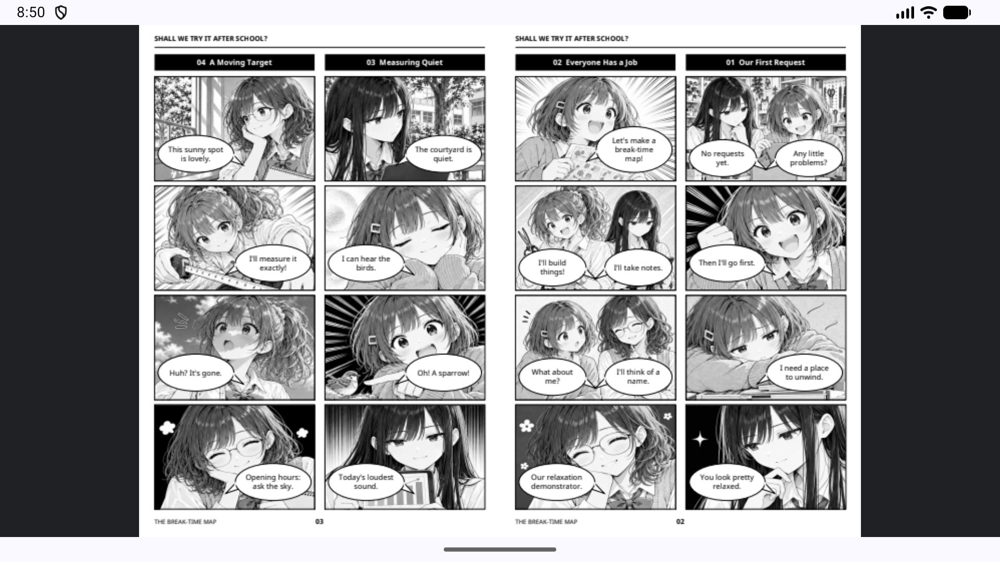

📱 स्क्रिनसटहरू



एन्ड्रोइडमा दुई-पृष्ठ दृश्य र R2L पढाइका लागि अनुकूलित आधुनिक PDF भ्यूअर
दुई पृष्ठहरू साथसाथै हेर्नुहोस्। मङ्गा र कला पुस्तक लेआउटहरूको लागि उपयुक्त।
दायाँ-देखि-बायाँ पढ्ने क्रमको लागि पूर्ण समर्थन, उल्टो स्लाइडरहरू र सहज स्वाइप इसाराहरू सहित।
शून्य-कन्फिग अनुभवको लागि PDF मेटाडेटाबाट स्वचालित रूपमा पृष्ठ लेआउट र पढ्ने दिशा पत्ता लगाउँदछ।
कागजातहरूमा सटीक हिट हाइलाइटिङ (पहेंलो पृष्ठभूमि र रातो बोर्डर) को साथ द्रुत पाठ खोज।

यी नमुना PDF फाइलहरूबाट एप प्रयोग गरी हेर्नुहोस्:
१४ भाषा र १७ भाषा/क्षेत्रीय संस्करणमा तीन भागका दरले ५१ PDF छन्। स्पेन/ल्याटिन अमेरिका, ब्राजिल/पोर्चुगल र ताइवान/हङकङका छुट्टै फिल्टर छन्। हङकङ संस्करण मानक लिखित चिनियाँमा छ, बोलचालको क्यान्टोनिजमा होइन। आकार र SHA-256 जाँचिन्छ; पुराना PDF राखिन्छन्।
"द ट्राइ-इट क्लब" भाग १ र २
© 2026 कोमाइरो बियोरी
यस कृतिका भागहरू जसमा प्रकाशकले प्रतिलिपि अधिकार र अन्य इजाजतपत्र योग्य अधिकारहरू राख्छन्, क्रिएटिभ कमन्स एट्रिब्युट 4.0 इन्टरनेसनल (CC BY 4.0) अन्तर्गत उपलब्ध गराइन्छ。
https://creativecommons.org/licenses/by/4.0/
यो कृति पुन: प्रयोग गर्दा, शीर्षक, लेखकको नाम "Komairo Hiyori", मौलिक कृतीको स्रोत र इजाजतपत्रको लिङ्क देखाउनुहोस्, र कुनै परिवर्तन गरिएको भए स्पष्ट रूपमा खुलाउनुहोस्。
यस कृतिले पाठ, छवि र अनुवादको सिर्जनाका लागि जेनेरेटिभ एआई प्रयोग गर्दछ。 फन्टहरू जस्ता तेस्रो पक्षहरूको अधिकार भएका सामग्रीहरूमा तिनीहरूका सम्बन्धित इजाजतपत्रहरू लागू हुन्छन्。 यस सूचनाले प्रतिलिपि अधिकार वा यस्तै अधिकारहरू द्वारा सुरक्षित नगरिएका भागहरूको प्रयोगलाई प्रतिबन्धित गर्दैन。
MihirakiPDFViewer गोपनीयतालाई यसको मूलमा राखेर डिजाइन गरिएको हो।
PDF को प्रशोधन तपाईंको उपकरणमै हुन्छ। नमुना डाउनलोड, क्लाउड सेवा, अद्यावधिक जाँच र वैकल्पिक समर्थन खरिदका लागि नेटवर्क जडान प्रयोग हुन्छ।
नि:शुल्क र विज्ञापन-रहित
एप प्रयोग गर्न पूर्ण रूपमा नि:शुल्क छ। सबै मुख्य विशेषताहरू, जस्तै PDF भ्यूइङ, दुई-पृष्ठ दृश्य, र खोज, खरिदको पर्वाह नगरी कुनै पनि प्रतिबन्ध बिना उपलब्ध छन्।
*विकासकर्तालाई समर्थन गर्न वैकल्पिक इन-एप सुझावहरू उपलब्ध छन्। समर्थकहरूले सेटिङ स्क्रिनमा विशेष स्मारक ब्याज देख्नेछन्।
नमुना PDF हरूमा सुरुमा पछिल्लो भाग पहिले देखिन्छ। भाग १ बाट सुरु हुने क्रम रोज्न सक्नुहुन्छ। रोजेको क्रम सुरक्षित हुन्छ र भाषाअनुसार छान्दा पनि लागू हुन्छ।
यी भिडियोहरू अङ्ग्रेजीमा छन् र YouTube मा खुल्छन्।